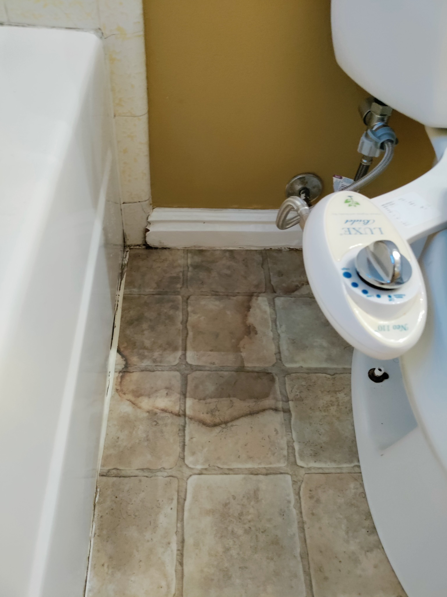
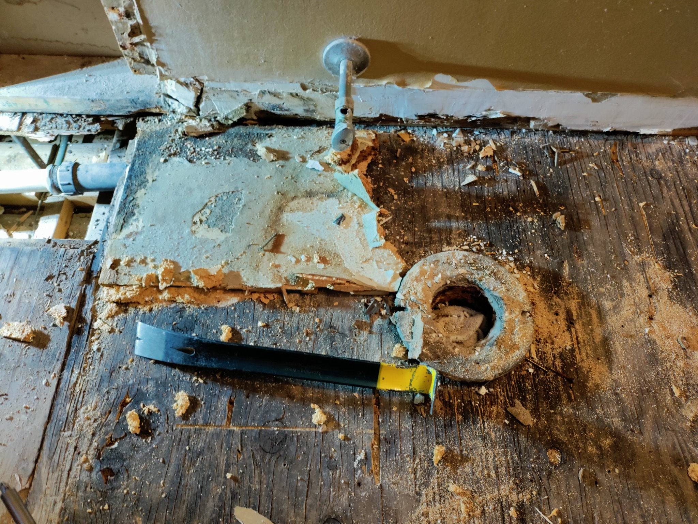
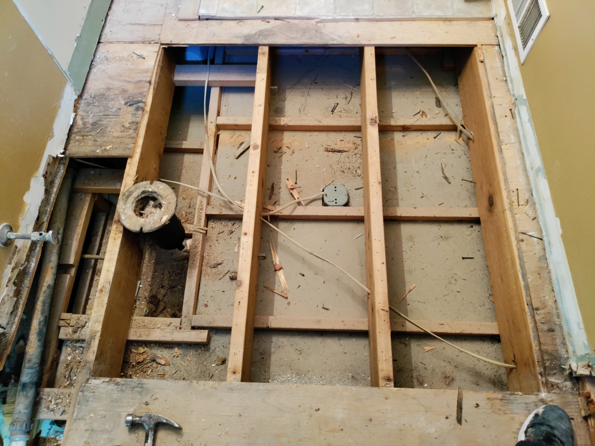
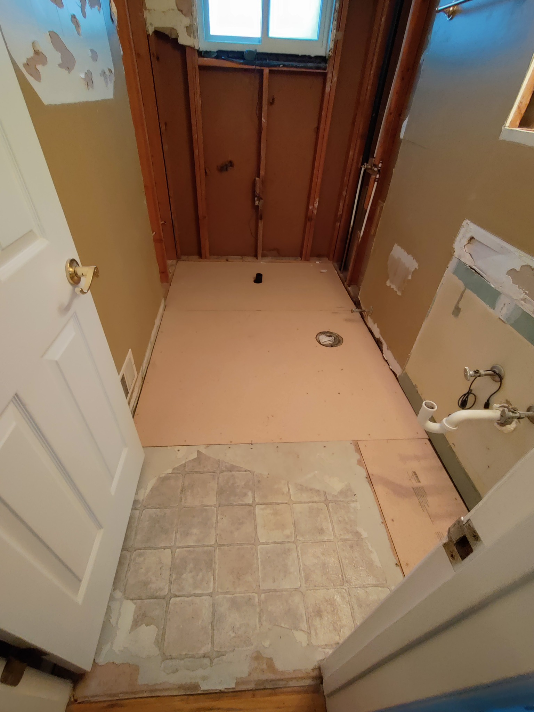
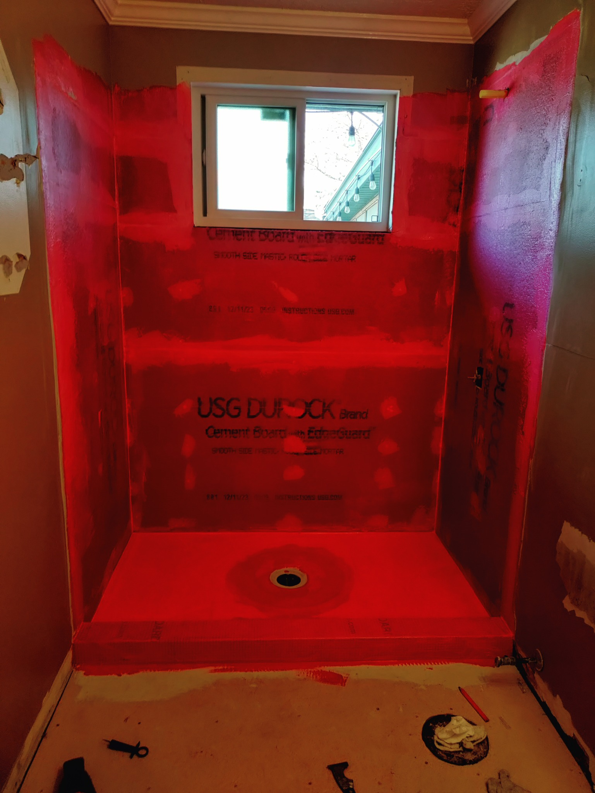
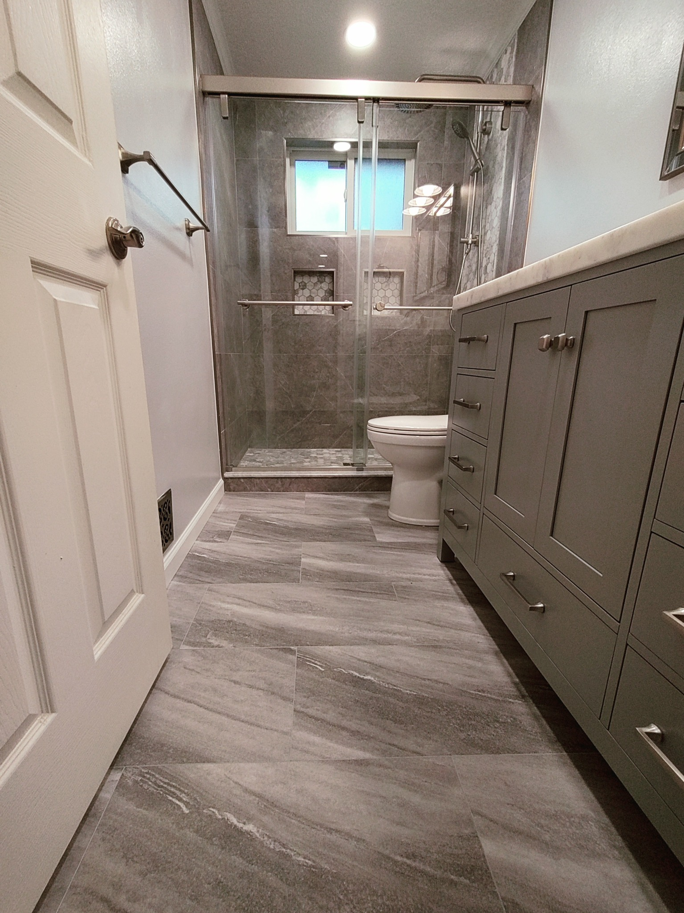

Project Snapshot
This case study shows why bathroom remodels can change once the floor, walls, or shower area are opened up. What looked minor on the surface required structural repair, proper waterproofing, and a complete rebuild.
The Problem Looked Small
“It’s probably just an old stain or dirty grout. We just want the bathroom updated.”
That is exactly why hidden bathroom damage is so dangerous. From the surface, it can look like a cleaning issue, old flooring, or normal wear. Underneath, moisture can be working through the floor system and damaging wood around the toilet, tub, or shower.

Before: the visible warning sign was a dark stained area near the toilet and tub. It did not show the full problem underneath.
What We Found During Demo
Once the flooring came up, the bathroom told the real story. The subfloor near the toilet flange and wet areas had been compromised. This is where the project changed from a cosmetic update into a proper repair and remodel.
- Rotted subfloor around the toilet flange — the wood was dark, soft, and deteriorated where it needed solid support.
- Moisture damage spreading beyond the visible stain — the surface stain was only the clue, not the full problem.
- Floor opened down to the joists — damaged materials had to be removed so the rebuild had a solid foundation.
- Shower area needed proper waterproofing — this is the layer that protects the new work long term.

The reveal: rotted subfloor around the toilet flange. This is the kind of damage that is impossible to fully price until demo begins.

The damaged floor was opened down to the joists so the structure could be rebuilt correctly instead of patched over.
The Rebuild: Built Back the Right Way
Once the damage was exposed, the plan was simple: remove the compromised material, rebuild the floor system, prep the shower correctly, and install waterproofing before finishes went in.

Rebuild phase: new subfloor installed and shower area opened for proper prep.

Waterproofing phase: cement board and full membrane coverage before tile. This is the part homeowners usually never see, but it matters most.
Cost Reality: Why the Price Changes After Demo
A bathroom can look like a basic remodel until the floor or walls are opened. When hidden damage is found, the cost is not just for nicer finishes — it is for fixing the problem correctly before covering it back up.
| Scope Area | Typical Range | Why It Matters |
|---|---|---|
| Basic demo and disposal | $800–$1,500 | Opens the project and exposes hidden conditions |
| Subfloor repair / replacement | $1,500–$3,500+ | Needed when rot or soft flooring is discovered |
| Shower prep and waterproofing | $800–$1,800 | Protects the new shower system long term |
| Tile, glass, vanity, flooring, finishes | $6,000–$10,000+ | Final look and function of the remodel |
| Realistic total range | $12,000–$16,000+ | Depends on how much damage is found once opened |
The stain was not the problem.
It was the warning sign.
Hidden bathroom damage does not always look dramatic from the outside. The smartest move is to fix what is underneath before spending money on finishes.
The Finished Result
After the damage was removed, the floor was rebuilt, the shower was waterproofed, and the finishes were installed, the bathroom became a clean, modern space with the proper work hidden underneath.

Finished bathroom: clean tile, glass enclosure, vanity, flooring, and a rebuilt system underneath.

Final shower view: the finished space looks clean, but the real value is that the hidden damage was fixed first.
The Outcome
- Damaged subfloor removed instead of hidden under new flooring
- Bathroom rebuilt on a solid foundation
- Shower waterproofed correctly before tile installation
- Finished remodel now looks clean and functions properly
- Homeowner gets peace of mind that the visible problem was not just covered up
Worried Your Bathroom Has Hidden Damage?
Devco Construction helps Salt Lake County homeowners understand what is visible, what might be hiding underneath, and what it takes to rebuild it correctly.